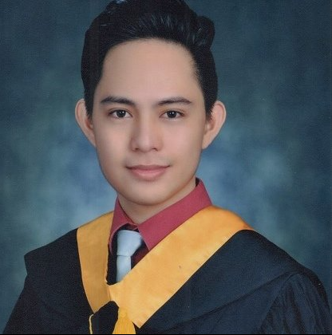

Cristopher L. Caseñas
Contact Me
Objective
Seeking a challenging career with a progressive organization that provide
an oppurtunity to capitalize my IT skills and abilities.
Educational Background
STI College - Bachelor of Science in Information Technology
2011 - 2015.
Skills
- Computer devices Repair and Maintenance(Hardware/Software)
- Network configuration and troubleshooting
- Windows Server Management
- Basic Programming
- Multimedia arts(Image and video editing)
Work Experience
-
Person Relation Assistant - National Kidney and Transplant Institute
Designation: Community Relation and Marketing
Workfield: Social Media, Events Documentation, Marketing Graphics Designing.
2016-2018
-
Technical Support - National Kidney and Transplant Institute
Designation: Information Resource Management
Workfield: Computer Maintenance, Database Management, Network Repair and
Troubleshooting, Hospital Information System Support.
2018-Present
Eligibility
- Electronic Data Processing Specialist (Civil Service Eligibility)
- Computer System Servicing (TESDA National Certificate II)
Learning and Development
- DICT ICT Proficiency
- Tesda Onling Program - Computer System Servicing
- Udemy IP Adressing and Subnetting - Zero to Hero
- Udemy Microsoft SQL Server Beginners Crash Course
Personal Information
Birthdate: July 25, 1993
Age: 31
Gender: Male
Civil Status: Single
Citizenship: Filipino
Religion: Catholic